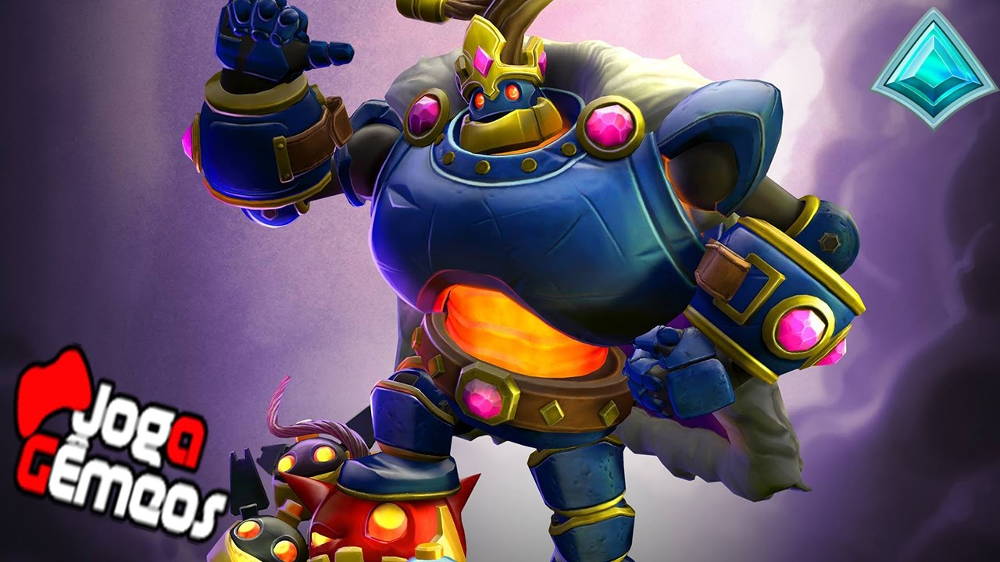
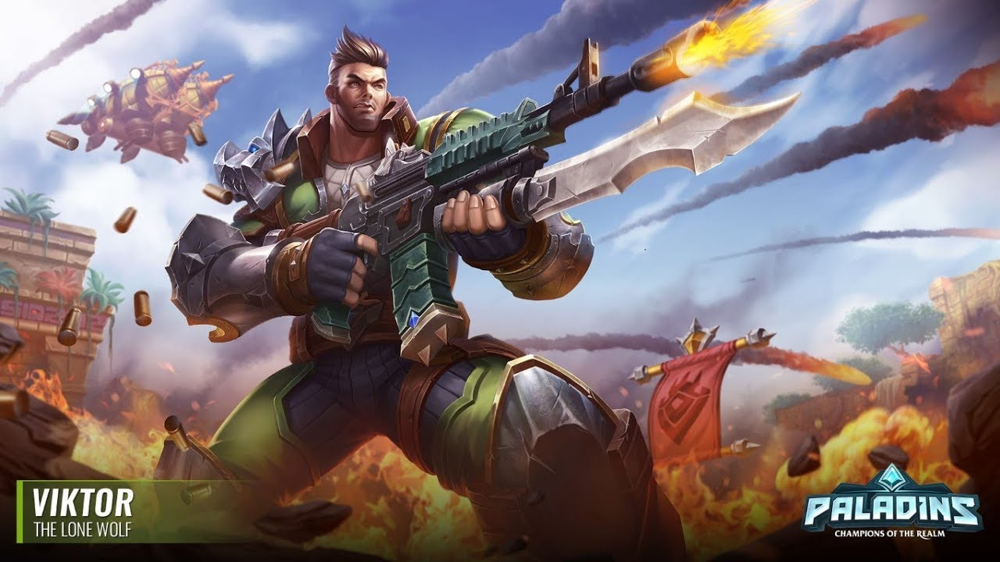

A little about me.
My top 5 paladins mains
- Androxis is my number 1 because he is easy to learn and probaley one of the most powerful
- My second favorite is Bomb king because although he is dificult to learn he is a really fun carecter.
- Third is victor because he is fun to play as and you feel powerful when your the only charecter that can run
- Forth is strix because he is good at sniping so i like to use him at a distcnce and then i hardley get harmed
- Last place goes to lex but im not saying he is the worst because he was the first charecter i played as in paladins.

credit to hi-rez studios

credit to hi-rez studios

" />
This work is licensed under a Creative Commons Attribution-NonCommercial-ShareAlike 4.0 International License.